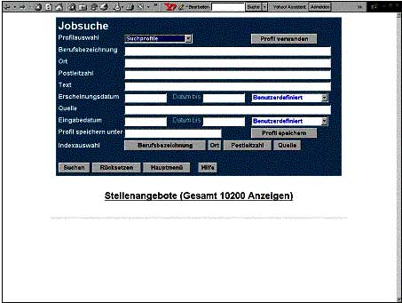

!!! Achtung: Leider steht der Dienst nicht mehr zur Verfügung !!! Stellenbörse für blinde und sehbehinderte Menschen
Bei der derzeitigen schlechten Arbeitsmarktsituation haben gerade behinderte Menschen sehr große Probleme einen geeigneten Job zu finden. Ganz besonders problematisch ist die Situation für blinde und sehbehinderte Menschen. Um gerade diesem Personenkreis bei der Jobsuche zu unterstützen, wurde im Rahmen eines Projektes vom Zentrum für blinde und sehbehinderte Studierende an der Fachhochschule Gießen-Friedberg (BliZ) für Stiftung Blindenanstalt, Frankfurt am Main (kurz: SBA, http://www.stiftung-blindenanstalt.de) mit finanzieller Unterstützung des Bundesministeriums für Arbeit die Stellenbörse für blinde und sehbehinderte Menschen weiter entwickelt.
Sehgeschädigten Menschen wird über das neue System der Zugriff auf ausgewählte Stellenanzeigen aus Zeitungen, Fachzeitschriften, dem Stellen-Informations-Service der Bundesanstalt für Arbeit (SIS) und weiteren Internetstellenmärkten ermöglicht. Zudem können auch Arbeitgeber direkt ihre Angebote einsenden.
PDF gemäß ISO 32000-1 und validiert mit PAC 2.0
DAISY 2.02
Bei der heutigen Arbeitsmarktsituation ist es sehr wichtig, möglichst schnell auf neue Stellenanzeigen zu reagieren. Sehende Menschen haben es hierbei relativ einfach, indem sie sich am Morgen einfach die Tageszeitungen kaufen und sofort auf die Stellenanzeigen antworten können. Blinden und sehbehinderten Menschen ist dies auf Grund ihrer Behinderung oft nicht möglich. Sie benötigen eine gewisse Zeit (abhängig von der Art ihrer Sehschädigung), um Stellenanzeigen zu lesen oder sich von anderen vorlesen zu lassen. Auch können sehgeschädigte Personen (noch) nicht jede Arbeit übernehmen. Jobline-Reha bietet die Möglichkeit, aus einem bereits für sehgeschädigte Personen geeigneten Angebot von Arbeitsplätzen eine passende Stelle zu finden. Auch können zur Verfügung stehende technische Hilfsmittel wie Braillezeile oder Screen Reader verwendet werden. Dadurch verringert sich die Zeit, die für die Suche nach Stellenangeboten benötigt wird.
Neben der direkten Suche über das Internet können Benutzer Suchanfragen (sogenannte Profile) speichern und werden dann regelmäßig per E-Mail über die aktuellen, zum Profil passenden Stellenangebot direkt automatisch informiert. Wöchentlich werden rund 5000 Stellenangebote in das System eingespielt und bleiben in der Regel zwei bis vier Wochen in der Datenbank gespeichert. Die Nutzung von Jobline-Reha ist kostenlos, steht aber nur blinden und sehbehinderten Personen zur Verfügung. Ausnahme sind hier Verbände und Institutionen, die Schwerbehinderte unterstützen. Sie können ebenfalls einen Zugang beantragen.
Nachdem sich ein Benutzer über ein Login an das System angemeldet hat, stehen ihm eine Reihe von Menüpunkten zur Verfügung. Die für ihn interessanteste ist die Jobsuche. Mit Hilfe der detaillierten Suchfunktion (siehe folgende Abbildung) kann der Benutzer/die Benutzerin die Stellenangebote durchsuchen. Folgende Optionen stehen zur Verfügung:
- Man kann explizit nach einer Berufsbezeichnung suchen, die in das Feld "Berufsbezeichnung" eingegeben wird. Hierzu können noch weitere Angaben gemacht werden, um die Suche nach den folgenden Kriterien einzuschränken: Ort, Postleitzahl, Text (bezieht sich in diesem Fall auf die Anzeigenquelle), Erscheinungsdatum der Quelle, bis wann die Quelle erschienen ist, Name der Quelle usw. Mit den möglichen Einschränkungen bekommt der Benutzer nicht alle Stellen, beispielsweise des Fachinformatikers, aufgelistet, sondern nur diejenigen Einträge, die sich z. B. auf einen bestimmten Postleitzahlenbereich oder einer Stadt beziehen. Somit wird es dem/r Blinden oder dem/r Sehbehinderten möglich, sich auf bestimmte Bereiche mit seiner/ihrer Jobsuche zu konzentrieren.
- Eine weitere Möglichkeit ist die Verwendung von bereits im System vordefinierten Suchprofilen. Diese Standardprofile enthalten die beliebtesten und meist vorkommenden Suchroutinen der Benutzer. Die angemeldete Person erhält im Feld "Profilauswahl" eine Liste verschiedener Profile. Auch kann ein/e Benutzer/in selbst Suchprofile erstellen und diese abspeichern. Um solch ein eigenes Profil zu erstellen, werden von dem/r Benutzer/in Angaben, wie sie zuvor erklärt wurden, gemacht, also es wird die Berufsbezeichnung, die Stadt usw. definiert. Meldet sich der/die Benutzer/in das nächste mal bei Jobline-Reha ein, ist es ihm/ihr möglich, aus einer Liste das zuletzt abgespeicherte Profil auszuwählen, so dass ein erneutes Eingeben der Daten nicht mehr erforderlich ist.
- Eine weitere Funktion und damit Angebot von Jobline-Reha ist der E-Mail-Versand. Dieser Service ermöglicht es den Benutzer/innen immer auf den aktuellsten Stand zu sein, was neue Anzeigen angeht. Die Suchprofile der Benutzer/innen werden mit den neu hinzukommenden Anzeigen abgeglichen. Hat ein Benutzer/in ein Suchprofil mit der Berufsbezeichnung beispielsweise des Fachinformatikers mit allen gewünschten Einschränkungen angelegt und das Email-Abonnement angefordert, wird der/die Benutzer/in in regelmäßigen Abständen über Neuerungen in der Datenbank per E-Mail informiert, die auf das Suchprofil des/der Benutzers/in passen.
- Eine weitere wichtige Eigenschaft von Jobline-Reha ist es, über ein externes Modul offline genutzt werden zu können. Diese Variante ist gerade für solche Nutzer/innen günstig, welche nicht über einen schnelleren Internetanschluss, wie etwa A-DSL oder schneller, verfügen. Dieses Modul wird mit der Datenbank, ist es mit ihr verbunden, synchronisiert, so dass auch die Offline-Datenbank auf dem aktuellsten Stand ist. Das Offline-Modul ermöglicht es auch, die Online-Datenbank zu aktualisieren. Die Aktualisierung des Systems muss also nicht online geschehen.
Projekte
- Checkliste Bauen für alle barrierefrei der Stadt Dinslaken
- Barrierefreie Fassungen der Dokumente von der Stadt Duisburg
- Patientenaufklärungsbögen für Menschen mit Sehbeeinträchtigung zugänglich machen
- HelB
- NedosHessen
- Elektronische Literaturversorgung für Sehgeschädigte
- Linux für Blinde
- Intranetportal des BliZ
- Geldbörse für Blinde
- Jobline Reha